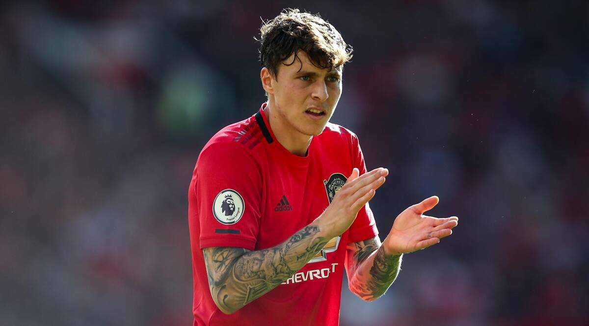

Manchester United currently have 4 first team goalkeepers, David De Gea, Dean Henderson, Lee Grant and recently bought Tom Heaton
David de Gea Quintana (born 7 November 1990) is a Spanish professional footballer who plays as a goalkeeper for Premier League club Manchester United and the Spain national team. He was regarded as one of the best goalkeepers in the world throughout the latter half of the 2010s.[4][5][6] Born in Madrid and raised in nearby Illescas, De Gea began his playing career with Atlético Madrid, rising through the academy system at the club before making his senior debut in 2009, aged 18. After being made Atlético's first-choice goalkeeper, he helped the team win the UEFA Europa League and the UEFA Super Cup in 2010. His performances subsequently attracted the attention of Manchester United, and De Gea joined the club in June 2011 for £18.9 million, a British record for a goalkeeper at the time. Since joining Manchester United, De Gea has made over 400 appearances and won a Premier League title, an FA Cup, a League Cup, three Community Shields and the UEFA Europa League. For three consecutive seasons from 2013–14 to 2015–16, he was elected as United's Sir Matt Busby Player of the Year, the first player in the award's history to win on three successive occasions (four in total),[7] as well as being included in four consecutive (five in total) PFA Team of the Year sides from 2015 to 2018. In 2018 he was named in the FIFA FIFPro World11.[8] Tipped by many as the successor to Iker Casillas as Spain's long-term goalkeeper,[9] De Gea was the captain for the Spain under-21 national team that won the European Championship in 2011 and 2013, and also competed in the 2012 Summer Olympics. He made his debut for the senior team in 2014 and was selected for that year's World Cup. De Gea was named as Spain's starting goalkeeper for the 2016 European Championship and the 2018 FIFA World Cup, receiving criticism for his performance in the latter.[10] He lost his place to Unai Simón for the 2020 European Championship

Dean Bradley Henderson (born 12 March 1997) is an English professional footballer who plays as a goalkeeper for Premier League club Manchester United and the England national team. Henderson signed his first professional contract with Manchester United in 2015 and extended it in 2018 for a further two years until 2022. He made his debut for Manchester United against Luton Town in the third round of the EFL Cup in 2020. He has also been loaned out to a number of other teams. Having played in various lower divisions, he made his Premier League debut with Sheffield United in 2019. He has represented England at under-16, under-17, under-20, under-21 and senior levels.Henderson joined the Manchester United academy aged 14, having spent six years at Carlisle United.[4] He first joined the academy in August 2011.[5] After progressing through the academy, Henderson was among 10 players to join the Academy squad for the 2013–14 season.[6] He became a regular goalkeeper for the U18 team in the 2013–14 season.[7] In the 2014–15 season, Henderson continued to impress as a regular goalkeeper for the U18 team, as he made 25 appearances but sustained an injury towards the end of the season.[8] Nevertheless, he was among nominees for the Jimmy Murphy Young Player of the Year award but lost out to Axel Tuanzebe.[4] In August 2015, Henderson signed his first professional contract with the club.
Lee Anderson Grant (born 27 January 1983) is an English professional footballer who plays as a goalkeeper for Premier League club Manchester United. Grant began his professional career with Derby County, making his Football League debut in September 2002. Grant spent five seasons with Derby, during which time he went out on loan to Burnley and Oldham Athletic. He joined Sheffield Wednesday in July 2007 and established himself as first-choice goalkeeper, playing in 136 consecutive matches. He moved to Burnley in July 2010, where he made 126 appearances in three seasons, before returning to Derby County in May 2013. Grant joined Stoke City in August 2016, initially on loan, before a permanent transfer in January 2017. He spent two seasons at Stoke before moving to Manchester United in July 2018.

Thomas David Heaton (born 15 April 1986) is an English professional footballer who plays as a goalkeeper for Premier League club Manchester United and the England national team. Heaton began his career in the Manchester United academy but was unable to break into the first team and spent time on loan with Swindon Town, Royal Antwerp, Cardiff City, Queens Park Rangers, Rochdale and Wycombe Wanderers, before joining Cardiff permanently after his release by Manchester United in July 2010. He then joined Bristol City on a one-year deal with an option of a second year but turned it down in May 2013 in favour of a move to Burnley, where he remained for six years before joining Aston Villa in 2019. After two years with Aston Villa, he returned to Manchester United in July 2021. Formerly an international from under-16 to under-21 level, Heaton has been involved in senior England squads since 2015, finally making his senior debut against Australia on 27 May 2016 in a friendly match.
Jacob Harry Maguire (born 5 March 1993) is an English professional footballer who plays as a centre-back for Premier League club Manchester United and the England national team. Maguire came through the youth system at Sheffield United before graduating to the first team in 2011. He totalled 166 professional games for the club and was their Player of the Year three consecutive times, also featuring in the PFA Team of the Year for League One as many times. In 2014, he transferred to Hull City for £2.5 million, who loaned him to Wigan Athletic in 2015. He joined Leicester City in 2017 for an initial fee of £12 million. Two years later, he moved to Manchester United for a fee believed to be £80 million, a world-record amount for a defender, and within six months was appointed the club captain. Maguire played one match for England under-21 in 2012. In October 2017, he made his senior debut, and he was chosen for the 2018 FIFA World Cup squad.
Victor Jörgen Nilsson Lindelöf (born 17 July 1994) is a Swedish professional footballer who plays as a defender for Premier League club Manchester United and the Sweden national team. Mainly a centre-back, he can also play as a right-back.[4] Lindelöf began his career in Sweden at Västerås SK, making his debut in October 2009. In December 2011, he agreed to move to Benfica in Portugal, initially representing the club at youth and B levels. After making his first-team debut in September 2013, he continued to appear for the club at B level, while also winning three Primeira Liga titles. He joined Manchester United in July 2017. Lindelöf has represented Sweden at under-17, under-19, under-21, and senior levels. He was inside the winning squad of the 2015 UEFA European Under-21 Championship. He made his senior international debut in March 2016 and represented his country at UEFA Euro 2016, the 2018 FIFA World Cup and UEFA Euro 2020.
Luke Paul Hoare Shaw (born 12 July 1995) is an English professional footballer who plays as a left-back for Premier League club Manchester United and the England national team. Originally a member of Southampton's youth system, Shaw made his first-team debut for the club in January 2012, and signed his first professional contract in May that year before becoming a regular in the Southampton team over the next two seasons. In June 2014, Shaw was signed by Manchester United for £30 million, then a world record transfer fee for a teenager. On 5 March 2014, he made his senior international debut for the England team in a 1–0 friendly win against Denmark, and later that year was selected in the squad for the FIFA World Cup. He scored his first international goal in the UEFA Euro 2020 Final, which was also the fastest ever scored in a UEFA European Championship final and fifth fastest in the tournament’s history.[4]
Aaron Wan-Bissaka (born 26 November 1997) is an English professional footballer who plays as a right-back for Premier League club Manchester United. Wan-Bissaka began his career with Crystal Palace and was named as the club's Player of the Year for the 2018–19 season. In 2019, he moved to Manchester United for an initial fee of £45 million, with another £5 million due in potential bonuses. He is of Congolese descent and made one appearance for DR Congo under-20s in 2015. He has gone on to represent the country of his birth, England, at under-20 and under-21 levels.
Paul Labile Pogba (born 15 March 1993) is a French professional footballer who plays for Premier League club Manchester United and the France national team. He operates primarily as a central midfielder, but can also be deployed as an attacking midfielder, defensive midfielder and deep-lying playmaker.[4] Born in Lagny-sur-Marne, Pogba joined the youth team of Ligue 1 side Le Havre in 2007, before a protracted transfer brought him to Manchester United two years later. After beginning his senior career with Manchester United two years later, limited appearances persuaded him to depart to join Italian side Juventus on a free transfer in 2012, where he helped the club to four consecutive Serie A titles, as well as two Coppa Italia and two Supercoppa Italiana titles. During his time in Italy, Pogba further established himself as one of the most promising young players in the world and received the Golden Boy award in 2013, followed by the Bravo Award in 2014. In 2016, Pogba was named to the 2015 UEFA Team of the Year, as well as the 2015 FIFA FIFPro World XI, after helping Juventus to the 2015 UEFA Champions League Final, their first in 12 years. Pogba's performances at Juventus led to him returning to Manchester United in 2016 for a then-world record transfer fee of €105 million (£89.3 million).[5] The fee paid for him remains the highest paid by an English club.[6] In his first season back, he won the League Cup and the Europa League.[7] In the 2018–19 season, he was named to the PFA Team of the Year. Internationally, Pogba captained France to victory at the 2013 FIFA U-20 World Cup and took home the award for the Best Player for his performances during the tournament. He made his debut for the senior team a year later and featured prominently at the 2014 FIFA World Cup, where he was awarded the Best Young Player Award for his performances. He later represented his nation at UEFA Euro 2016 on home soil, where he finished as a runner-up, before winning the 2018 FIFA World Cup, scoring in the final.
Bruno Miguel Borges Fernandes (European Portuguese: [ˈbɾunu fɨɾˈnɐ̃dɨʃ]; born 8 September 1994) is a Portuguese professional footballer who plays as a midfielder for Premier League club Manchester United and the Portugal national team. Born in Maia, Porto, Fernandes started his career at Italian Serie B side Novara but soon made a move to Serie A side Udinese in 2013, followed by Sampdoria three years later. After five years in Italy, he signed with Sporting CP in 2017, where he was named club captain. He won back-to-back Taças da Liga in 2018 and 2019, as well as the Taça de Portugal, leading to him being named Primeira Liga Player of the Year in both seasons. In 2018–19, he scored a record of 33 goals in all competitions, making him the highest-scoring Portuguese midfielder and the highest-scoring midfielder in Europe in a single season. Fernandes' performances sparked the interest of several Premier League clubs, with Manchester United signing him for an initial €55 million (£47 million) in January 2020, becoming the second-highest fee for a Portuguese player leaving the domestic league. Fernandes made his senior debut for Portugal in November 2017, after previously being capped at under-19, under-20 and under-21 levels. He also represented Portugal at the 2016 Summer Olympics. He was chosen in Portugal's squads for the 2018 FIFA World Cup, 2019 UEFA Nations League Finals and UEFA Euro 2020, winning the 2019 competition on home soil while being named in the Team of the Tournament.
Scott Francis McTominay (born 8 December 1996) is a professional footballer who plays as a central midfielder for Premier League club Manchester United and the Scotland national team. McTominay is a graduate of the Manchester United youth academy and made his senior debut for the club in May 2017. Born in England, he qualified to play for Scotland through his Scottish father. He made his senior international debut in March 2018, and represented the side at UEFA Euro 2020.
Marcus Rashford MBE (born 31 October 1997) is an English professional footballer who plays as a forward for Premier League club Manchester United and the England national team. A Manchester United player from the age of seven, Rashford scored two goals on both his first-team debut against Midtjylland in the UEFA Europa League in February 2016 and his Premier League debut against Arsenal three days later. He also scored in his first Manchester derby, as well as on his EFL Cup and UEFA Champions League debuts. With United, Rashford has so far won the FA Cup, EFL Cup, FA Community Shield and Europa League. Rashford scored on his England debut in May 2016, becoming the youngest English player to score in his first senior international match. He played at the UEFA Euro 2016 as the tournament's youngest player, and also represented England at both the 2018 FIFA World Cup and the UEFA Euro 2020. He is a campaigner against racism, homelessness and child hunger in the United Kingdom. Rashford has been praised for using his platform to be a political activist and philanthropist to drive societal change. For his efforts, he has received widespread praise, and has been recognised for his efforts from organisations both in and outside of sport, and was subject of a mural painted by street artist Akse in Withington.

Edinson Roberto Cavani Gómez (Spanish pronunciation: [ˈeðinsoŋ kaˈβani]; born 14 February 1987) is a Uruguayan professional footballer who plays as a striker for Premier League club Manchester United and the Uruguay national team. Cavani began his career playing for Danubio in Montevideo, where he played for two years, before moving to Italian side Palermo in 2007. He spent four seasons at the club, scoring 34 goals in 109 league appearances. In 2010, Cavani signed for Napoli, who signed him on an initial loan deal before buying him for a total fee of €17 million. In the 2011–12 season, he won his first club honour, the Coppa Italia, in which he was top scorer with five goals. With Napoli, Cavani went on to score 33 goals each in his first two seasons, followed by 38 goals in his third season, where he also finished as Serie A top scorer with 29 league goals. On 16 July 2013, Cavani was transferred to Paris Saint-Germain for a reported €64 million, at the time the most expensive signing in French football history.[3] With PSG, Cavani won six Ligue 1 titles, five Coupes de la Ligue and four Coupes de France.[4] He won Ligue 1 Player of the Year for the 2016–17 season, and was the league's top scorer in the 2016–17 and 2017–18 seasons. He also ranks as the club's all-time top goalscorer.[5] In 2020, Cavani signed with Manchester United. Cavani scored on his Uruguay debut against Colombia on 6 February 2008, and has since then earned 123 caps and scored 53 international goals, only behind strike partner Luis Suárez among Uruguayan internationals. He has participated in nine major international tournaments: the FIFA World Cup in 2010, 2014 and 2018, the Copa América in 2011, 2015, 2016, 2019 and 2021, and the FIFA Confederations Cup in 2013. He scored once at the 2010 World Cup to help Uruguay to fourth place in the tournament, and in 2011 was part of the Uruguay squad that won a record fifteenth Copa América title. He finished as the CONMEBOL 2018 World Cup qualification top scorer with ten goals.
Jadon Malik Sancho (born 25 March 2000) is an English professional footballer who plays as a winger for Premier League club Manchester United and the England national team. A highly technical, creative player, he is known for his trickery, pace and use of feints in one-on-one situations.[5] He came runner-up for the 2019 Kopa Trophy and was nominated to the 40-man shortlist for the 2020 Golden Boy.[6] Previously a youth player with Watford and Manchester City, Sancho signed his first senior contract with Borussia Dortmund in 2017. In his second season, he established himself as a first-team regular and was named in the 2018–19 Bundesliga Team of the Season. Ahead of the 2019–20 season, Sancho won his first trophy following the DFL-Supercup victory over Bayern Munich. Sancho was part of the England youth team that won the 2017 FIFA U-17 World Cup and made his debut for the senior team in 2018.